L’aphte
Les aphtes correspondent à de petites ulcérations qui se forment sur la muqueuse buccale. Leur origine reste floue, mais de nombreux facteurs favorisants sont désormais bien connus.
Un petit ulcère bénin et fréquent
L’aphte est une petite ulcération superficielle de la muqueuse buccale. Il n’est pas contagieux et guérit spontanément en 7 à 14 jours, sans laisser de cicatrice.
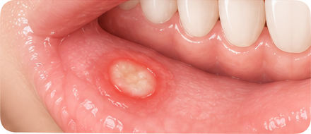
Des localisations typiques
L’aphte peut apparaître sur la face interne des joues, à l’intérieur des lèvres, sur la langue ou le plancher buccal (sous la langue).
-
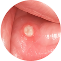
Face interne des joues
-
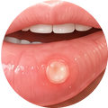
À l’intérieur des lèvres
-
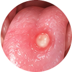
Sur la langue
-
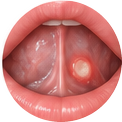
Plancher buccal (sous la langue)
Un aspect caractéristique
L’aphte se présente sous la forme d’une petite ulcération ronde ou ovale, à fond blanc ou jaunâtre, entourée d’un halo rouge. Il est douloureux, surtout au contact des aliments acides, épicés ou lors du brossage.
- Fond blanc ou jaunâtre : ulcération superficielle
- Halo rouge : inflammation
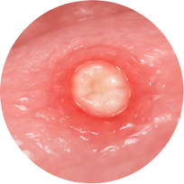
Il existe plusieurs formes d’aphtes
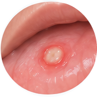
Aphte mineur (le plus fréquent)
- Petite taille (moins de 1 cm)
- Peu profond
- Guérison en 7 à 14 jours sans cicatrice
- Forme la plus fréquente
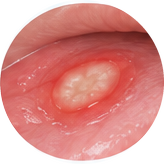
Aphte majeur
- Plus grand (plus de 1 cm)
- Plus profond et plus douloureux
- Guérison plus longue (plusieurs semaines)
- Peut laisser une cicatrice
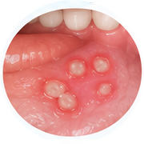
Aphte herpétiforme
- Plusieurs petits aphtes groupés
- Petite taille (1 à 3 mm)
- Guérison en 7 à 14 jours
- Peut récidiver fréquemment
Des facteurs multiples
La cause exacte est inconnue. Plusieurs facteurs peuvent favoriser l’apparition d’un aphte :
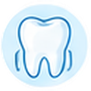
Micro-traumatismes (morsure, brossage trop vigoureux)- Stress et fatigue
- Certains aliments (acides, épicés)
- Carences (nutritionnelles : fer, vitamine B12, folates…)
- Prédisposition génétique
- Variations immunitaires
- Facteurs hormonaux
- Certaines maladies générales (plus rares)
- Fatigue et stress
- Fromages à pâte dure (comme le gruyère)
- Certains fruits : ananas, melon, fruits à coque (noix, noisettes, noix de coco)
- Certains traitements médicamenteux (aspirine, psychotropes)
- Maladies de l’immunité (VIH, etc.)
Des solutions pour soulager
L’aphte guérit spontanément. Les traitements visent à soulager la douleur et à favoriser la cicatrisation.
Bains de bouche apaisants : antiseptiques, acide hyaluronique…
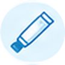
Gels ou crèmes locaux : corticoïdes, acide hyaluronique…
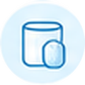
Antalgiques si besoin : en cas de douleur importante.
Bonne hygiène bucco-dentaire : avec une brosse souple.
Les aphtes disparaissent le plus souvent spontanément, sans traitement. Lorsqu’ils surviennent de façon récurrente, il est préférable de consulter votre dentiste, qui pourra prescrire un gel ou une pommade appliqué directement sur l’aphte, contenant notamment un anesthésique pour soulager la douleur. Un bain de bouche à visée thérapeutique peut aussi s’avérer efficace. Le traitement et la prévention passent également par le maintien d’une bonne hygiène bucco-dentaire et un suivi régulier chez votre chirurgien-dentiste, notamment pour un détartrage.
Dans certaines situations
L’aphte est généralement bénin. Une consultation est recommandée si :
- Les aphtes sont très fréquents (plusieurs épisodes par an)
- Ils sont particulièrement douloureux ou de grande taille
- Ils durent plus de 3 semaines
- Ils s’accompagnent de fièvre ou d’autres symptômes généraux
- Vous avez un doute sur le diagnostic
- Ils perturbent l’alimentation ou la qualité de vie